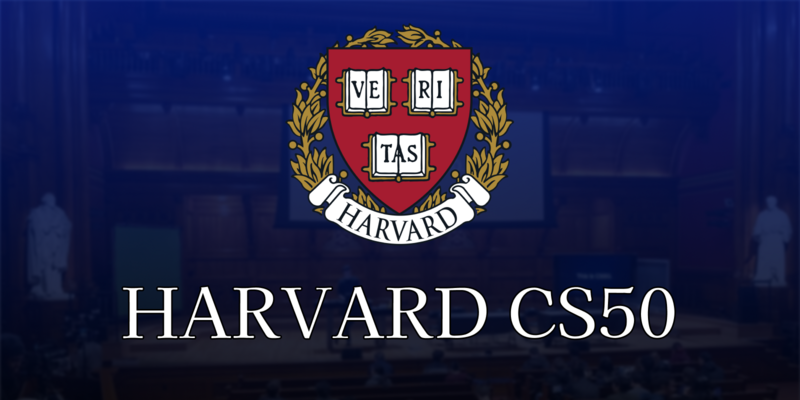
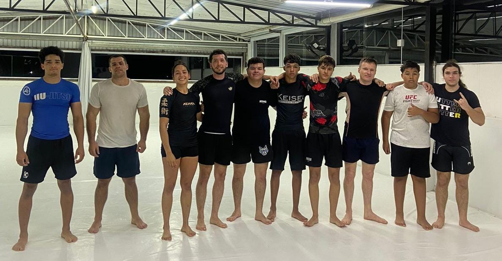

Olá, eu sou Thiago Laureano!
Apresentação para a Bosch
Introdução
Meu nome é Thiago, tenho 16 anos e moro com minha mãe no interior de Itupeva. Meu pai é engenheiro civil, residente em Recife, Pernambuco, e minha mãe trabalha como engenheira química na Unilever, em Indaiatuba. Atualmente, estou no 2º ano do Ensino Médio no Colégio Adventista de Indaiatuba.
Educação e Projetos
Educação | $ \text{print("Hello World")} $
Possuo grande interesse por áreas relacionadas à lógica e à matemática, o que me motivou a ingressar no campo da programação. Tenho como objetivo prosseguir meus estudos em uma graduação voltada a esse nicho, como Ciência da Computação, Engenharia de Software ou qualquer outro ramo da Engenharia, visando desenvolver competências capazes de contribuir para a criação de soluções digitais inovadoras e eficientes.
Atualmente, estou realizando o curso CS50 de Harvard, que tem aprofundado meus conhecimentos em ciência da computação, lógica de programação e resolução de problemas.
Experiência Profissional | Freelance
Possuo experiência significativa no desenvolvimento de bots e sites, realizando trabalhos freelance para clientes de diversos nichos. Entre meus principais projetos, destacam-se: um bot de encaminhamento de mídia para Telegram (EvoTech), um bot de RPG e entretenimento, um bot que funciona como loja de Robux no Discord, e uma aplicação em Laravel para gerenciamento de estoque de uma loja, desenvolvida como TCC de um cliente.
Essas experiências me permitiram aprimorar minhas habilidades em programação, resolução de problemas e atendimento às necessidades específicas de cada projeto.
Meus Hobbies
Artes Marciais (MMA, Jiu-Jitsu Brasileiro, Boxe)
Atualmente, o hobby em que mais tenho me destacado é a luta, especialmente no MMA, com foco em Jiu-Jitsu Brasileiro (JJB). Treino há cerca de seis meses na academia Keisei, especializada em JJB, e também pratico boxe há três anos. Ao longo do tempo, tive experiências em outras artes marciais, como o karatê, no qual alcancei a faixa amarela.
Música (Guitarra, Bateria, Baixo)
Outro hobby que me apaixona é a música. Toco guitarra desde os 12 anos e também tenho experiência com outros instrumentos, como bateria, baixo e violão clássico e acústico.
A música, por incrível que pareça, foi um dos principais pilares no desenvolvimento de outras habilidades. Por meio dela, aprendi a importância da dedicação e da evolução constante, valores que me deram força para ingressar e persistir nas artes marciais e na programação, permitindo-me alcançar o nível em que me encontro atualmente.
Fechamento e Desenvolvimento
Feedback e Qualidades
O que busco aprimorar:
Desejo desenvolver meu conhecimento e minhas habilidades de forma contínua. Atualmente, estou focando em comunicação e raciocínio lógico, estudando, por exemplo, matemática de forma autodidata para fortalecer minha base e aprimorar meu desempenho em programação e projetos pessoais.
Porque Soluções Digitais?
Escolhi Soluções Digitais porque é uma área em que já atuo e na qual possuo habilidades. Além disso, a reputação da Bosch como referência em inovação e tecnologia, aliada à oportunidade de ingressar em uma empresa multinacional, representa para mim um ambiente ideal para aprender, crescer profissionalmente e aplicar meus conhecimentos de forma prática.
Curiosidade 1: Gosto de viajar.
Curiosidade 2: Tenho uma gatinha chamada Axl.